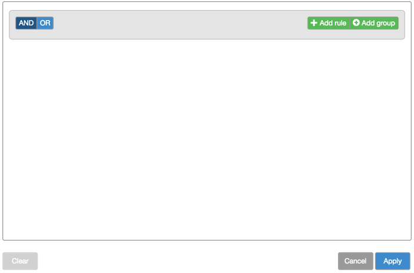
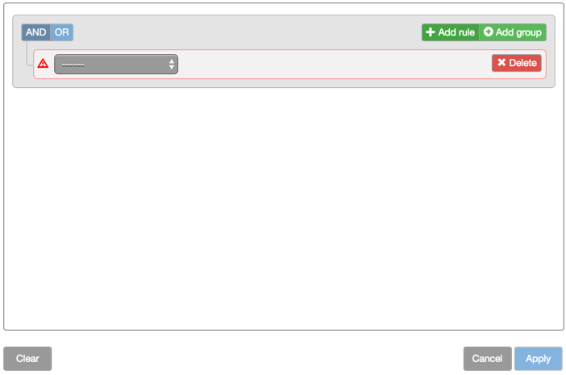
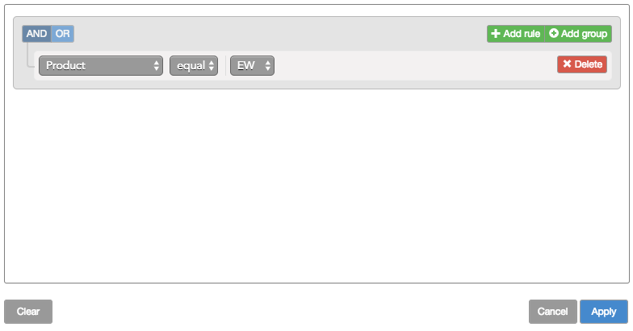
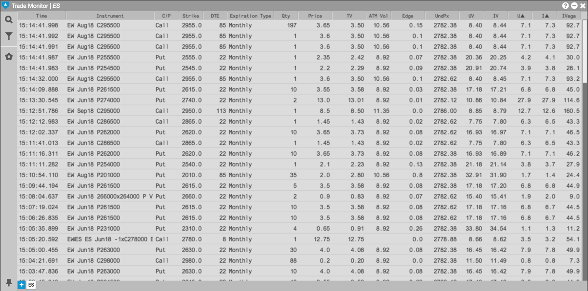
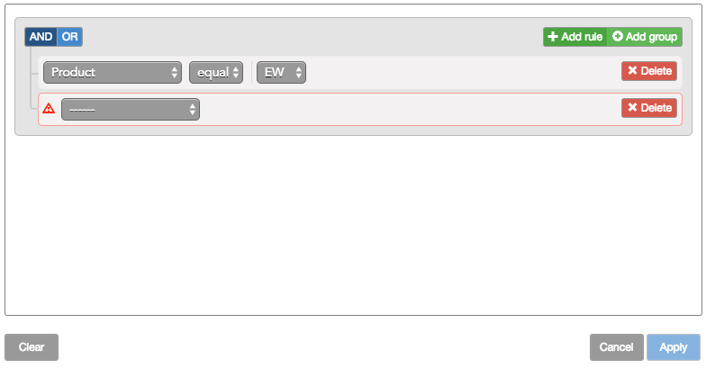
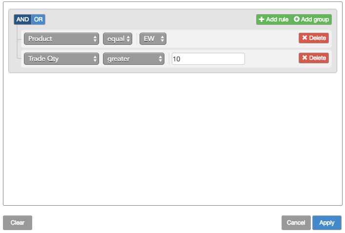
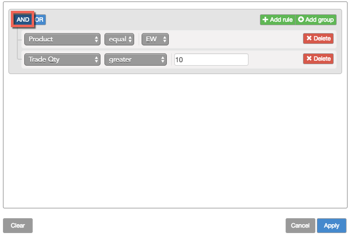
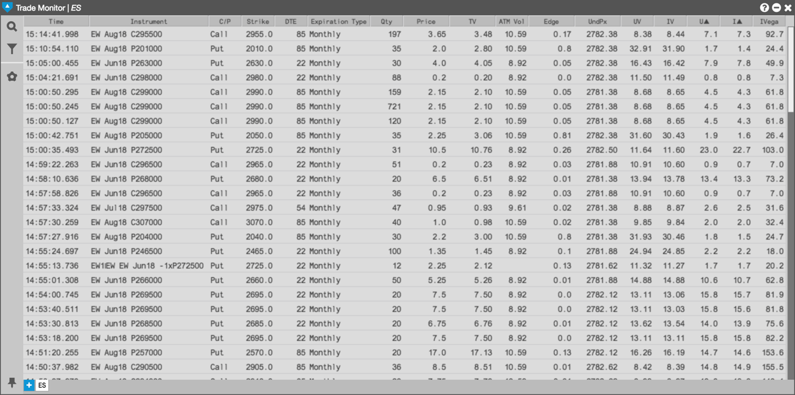

You can create filters with one rule or combine multiple rules to narrow the results further.
To create a single filter rule:
From the sidebar, click the icon to open the Filter builder.

Click Add rule.
A blank rule is added.

Select the desired field you want to use in the filter; then select the desired criteria for the field.

Click Apply.
The contents of the Options Trade Monitor widget updates to show only those trades that match the filter rule.

To combine multiple filter rules:
Create the first filter rule, as shown above.
Click Add rule.

Select the desired field you want to use in the filter; then select the desired criteria for the field.

Click AND to require both rules to be true or OR to require only one rule to be true.
In this case, you click AND.

Click Apply.
The contents of the Options Trade Monitor widget updates to show only those trades that match the combined filter rule.
